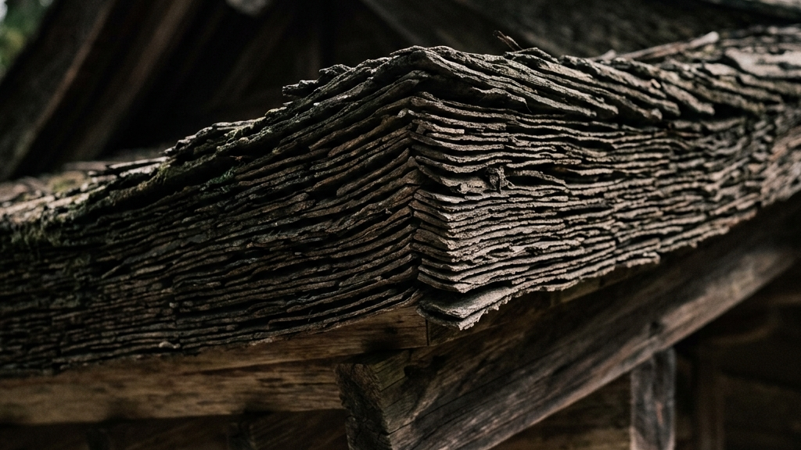

御本殿の改修において、最も過酷で、かつ最も崇高なプロセスが屋根の「檜皮葺（ひわだぶき）」の全面葺き替えと、「漆塗り」の修復である。どちらも現代のテクノロジーをもってしても、一切の効率化が許されない領域だ。
檜皮葺とは、文字通りヒノキの樹皮を剥ぎ取り、それを少しずつずらしながら何重にも重ね、竹釘で固定していく日本古来の技法である。まず、原料となる檜皮を調達する段階から狂気が始まる。生えているヒノキの皮を、木を枯らさないように職人が一枚ずつ手作業で剥いでいくのだ。剥いだ皮を整形し、束ね、屋根の上へと運ぶ。そして、途方もない枚数の檜皮を少しずつずらしながら、一本一本竹釘を口に含み、専用の金槌で打ち込んでいく。岡太神社と大瀧神社 檜皮葺の「日本一複雑な屋根」と職人の手仕事でも言及されるように、この「一枚重ねては打つ」という単調で過酷な肉体労働の無限の反復だけが、あの優美で重厚な屋根の曲線を形作るのである。
一方、漆塗りもまた、想像を絶する手間の結晶である。124年分の汚れと劣化した古い漆を丁寧に剥がし落とし、木地を整え、下地を施し、幾度も漆を塗り重ねていく。漆は湿気によって硬化するため、天候や気温、湿度を肌で感じ取りながら、乾くタイミングを完璧に見極めなければならない。本金糸と千年の構造証明─西陣織を支える漆と和紙の定着技術に見られるように、漆という天然の接着剤・保護材は、完全に定着するまでに数十年、時には100年単位の時間を要する。塗って終わりではなく、塗ってからが本番なのだ。
これらの工程には、「タイパ」という概念が存在しない。いや、あえてタイパを捨て去ることでしか、到達できない強度があるのだ。CADで設計し、工場でプレカットされた建材を現場でボルト留めする現代建築は、たしかに早くて安い。しかし、そこには「人間の痕跡」がない。檜皮の束を力強く打ち込む職人の息遣い、漆の表面をミリ単位で研ぎ出す指先の感覚。この果てしない物理的摩擦の蓄積こそが、建築物に魂を宿らせ、100年先の人々を圧倒する「威厳」へと変貌する。職人たちは、建物を直しているのではない。100年分の祈りと技術を、木と漆という媒体を通じて次の時代へと転送しているのだ。
Core Principles of Restoration